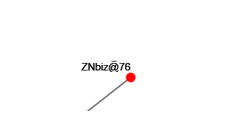
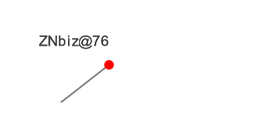
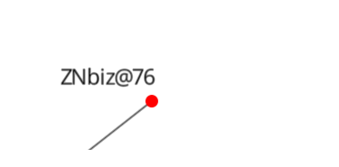

My experience of participating in GSoC 2016

Do not be afraid of anything. If you are afraid, failure goes after you. Fear is an emotion that can be with us every day; but in our life we must to conquer fear at the most crucial monents. Having doubts even for a moment, you will be defeated.Takuan Soho.
A few words about the project...
Hello! I want to tell you a little about the "summer internship" for students and what I did this summer :)
I worked on the project from Computational Biology @ University of Nebraska-Lincoln. My mentors were David Tichy, Tom Helikar.
During this summer I needed to perform two designs for library ccNetViz. You can see my code here in this repository https://github.com/Znbiz/HelikarLab. And there are the commits.
Intention.
Target 1. Algorithm for of drawing graph on a rectangular grid.
I have got a task: to develop an algorithm that capable to draw graphs are on a rectangular grid. One of requirements of is that clusters be clearly visible. An algorithm for automatic drawing of biochemical networks is a basis of offers. I have carried out it, you can see it here. However we had to refuse to this algorithm because his operating speed on graphs with the number of vertices is more than 10 exp fall. This happened by reason of that the algorithm was based on a complicated enumeration method.
I suggested to go away from this method and to develop my own. My option was a search of a special number for each vertex, which would be allow for one pass the vertices at a certain distance from each other. This number has become the number of optimal ways extending through the top. Below you can see the advantages and disadvantages of this approach, and I will present some examples of the algorithm.
Advantages:
- On small graphs of (<= 100 vertices) are clearly visible clusters
- On the several orders of magnitude faster than algorithms, which also draws on the gridе
- Simple to understanding
Disadvantages:
- Very slow if the graph more than ~ 200 nodes. As compared with the force algorithm
- In some graphs of bad is the division of clusters
Conclusion:
The algorithm has adopted, but it has not embedded in the library because Graphs with the number of vertices of> 1000 browser hangs for a long time. I have a hypothesis about how to improve my algorithm quality and speed of, but it will take more time. Algorithm code can be found here github
Examples:
Count "HGF" drawn not on the grid by the force algorithm
The drawing the graph has taken мс
Count "HGF" drawn on grid by my algorithm
The drawing the graph has taken мс
Count "Bronchiseptica" drawn not on the grid by the force algorithm
The drawing the graph has taken мс
Count "Bronchiseptica" drawn on grid by my algorithm
The drawing the graph has taken мс
Target 2. Development SDF generator for text.
Now the library ccNetViz draws signatures of vertices in one texture. It makes the rendering of the text with increasing the graph slower, and it also does not give an opportunity to work with a variety of effects for text.
To achieve the goal, it was decided to split task into several ones of subproblems.
- To develop a generator SDF text, more accurate SDF atlas. What is the SDF you can find out from the article Improved Alpha-Tested Magnification for Vector Textures and Special Effects. It is important to realize this algorithm such a way that it will work on the client side.
- To make the display of text that its texture is created for each symbol. It means that drawing of each symbol is separate.
- To integrate the above tools to the library.
SDF implements a simple algorithm in pure JavaScript to get the results which could not be incorporated into ccNetViz library. Since the processing time atlas containing 250 symbols occupied a more than 10 seconds. After I have made a suggestion to make all the calculations algoritma using WebGL The result of this decisions was the reduction in the processing time of the atlas 250 symbols to a few tenths of a second ~ 0.6 seconds. A working generator SDF is below.
Also, the possibility has been implemented in libraries to use the pre-generated on the server atlases.
All three methods of displaying the names of vertices have included in the library. Advantages and disadvantages of these three approaches are displaying text.
Rendering the vertex the names on the same texture (as it was before)
Advantages:
- No need to access the server
- The average speed of drawing
- Ability to specify your unique font
- The resource-costly work with text
- The quality of the text decreases with an increase
When the vertex of drawing names for each symbols it uses its own texture. Texture is taken from the SDF atlas that generated on the client
Advantages:
- No need to access the server
- The text is displayed as vectorial. It does not lose the quality with an increase.
- Ability to specify your unique font
- The possibility to apply to the text of various effects and more accurately configure the display of titles vertices
- Low of drawing speed as compared with other methods. The higher the quality of generation SDF atlas and the more the quantity of drawing symbols on the atlas take more time.
When the vertex of drawing names for each symbol it uses its own texture. Texture is taken from the SDF atlas advance generated on the server
Advantages:
- High quality atlas SDF
- High-speed of drawing of text
- It is necessary to access the server
- You cannot set your unique font
Comparison: To see the name of the graph vertices increase
Rendering the vertex the names on the same texture (as it was before)
The rendering graphics has taken мс

When the vertex of drawing names for each character it uses its own texture. Texture is taken from the SDF atlas generated on the client
The rendering graphics has taken мс

When the vertex of drawing names for each character it uses its own texture. Texture is taken from the SDF atlas advance generated on the server
The rendering graphics has taken мс

Conclusion:
I have suggestion that the quality atlas of drawing on the client side can be improved. In order to optimize and improvement of SDF algorithm WebGL can take long, because nobody implemented this algorithm on WebGL before. We have many ways to develop :)